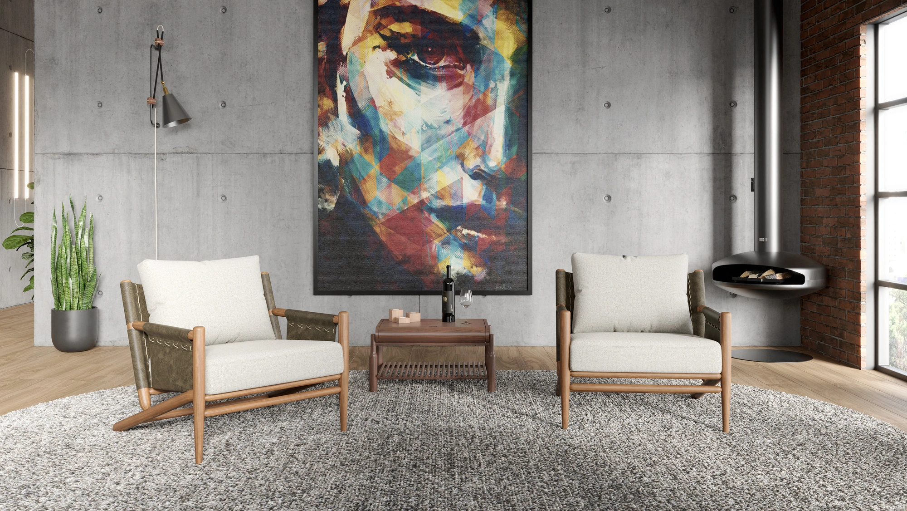
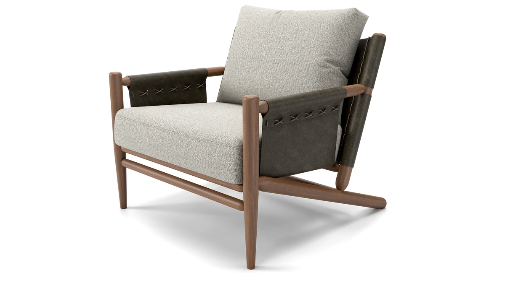

Poltrona Ipê.
Inspiração orgânica e marcenaria de precisão. Estrutura maciça em madeira nobre e estofamento anatômico em tecido tátil.
Consultar disponibilidade

Ficha Técnica
Especificações & Estrutura
Peça
Poltrona Ipê
Estrutura
Madeira maciça nobre com acabamento artesanal
Estofamento
Espuma anatômica D-28 com revestimento selecionado